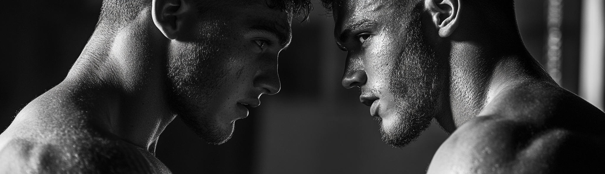

Strongman
Competición de Strongman: Orígenes y Actualidad
Orígenes del Strongman
Las competiciones de Strongman tienen sus raíces en la antigüedad, con ejemplos que se
remontan a las culturas nórdica y celta, donde los hombres competían en pruebas de fuerza
como lanzar troncos, levantar piedras y arrastrar cargas pesadas. Sin embargo, la versión
moderna del Strongman comenzó a tomar forma a nes del siglo XIX y principios del siglo
Primeros Eventos
En el siglo XIX, los llamados "hombres fuertes" se exhibían en circos y ferias, realizando
hazañas impresionantes de fuerza como doblar barras de hierro, levantar objetos pesados y
realizar otras pruebas de resistencia física. Estas exhibiciones sentaron las bases para las
competiciones más organizadas que seguirían.
Consolidación del Deporte
El verdadero origen de las competiciones de Strongman tal como las conocemos hoy se
atribuye a la creación del evento "World's Strongest Man" (El Hombre Más Fuerte del Mundo)
en 1977 por el canal de televisión CBS. Este evento reunió a competidores de diferentes
disciplinas de fuerza, como levantadores de pesas, culturistas y atletas de potencia, para
competir en una variedad de pruebas diseñadas para medir la fuerza general.
Desarrollo y Evolución
Desde su creación, las competiciones de Strongman han evolucionado signi cativamente.
Los eventos iniciales eran una mezcla de pruebas inspiradas en las tareas cotidianas y
elementos culturales, pero con el tiempo se han formalizado y diversi cado.
Pruebas Clásicas
Algunas de las pruebas clásicas del Strongman incluyen:
Levantamiento de piedras de Atlas: Levantar y colocar piedras esféricas de peso creciente
sobre podios.
Camión de arrastre: Arrastrar camiones u otros vehículos pesados.
Paseo del granjero: Transportar pesadas cargas en cada mano a lo largo de una distancia
determinada.
Levantamiento del tronco: Levantar un tronco desde el suelo hasta sobre la cabeza.
Expansión Global
A partir de la década de 1980, el deporte comenzó a expandirse globalmente con la creación
de competiciones nacionales e internacionales, como el Arnold Strongman Classic y la Liga
de Strongman Champions League. Esto permitió que atletas de todo el mundo pudieran
competir y ganar reconocimiento.
Actualidad del Strongman
Hoy en día, el Strongman es un deporte profesional con seguidores globales y competiciones
en casi todos los continentes.
Profesionales y Amateurs
El deporte cuenta con diferentes niveles de competición, desde amateurs hasta profesionales
. Las competiciones más prestigiosas incluyen el World’s Strongest Man, el Arnold Strongman
Classic, y el Europe's Strongest Man, entre otros.
Diversi cación de Competidores
Strongman
El Strongman ha visto una diversi cación en términos de los competidores. Aunque
históricamente dominado por hombres, en los últimos años ha habido un aumento signi cativo en la
participación femenina, con competiciones dedicadas exclusivamente a mujeres.
Entrenamiento y Ciencia
El entrenamiento de los atletas de Strongman se ha vuelto cada vez más cientí co, incorporando
principios avanzados de entrenamiento de fuerza, nutrición, y recuperación. Los atletas
entrenan especí camente para las diferentes pruebas que enfrentarán en las competiciones,
lo que ha llevado a un aumento en el rendimiento y la espectacularidad de los eventos.
Impacto Cultural y Mediático
Las competiciones de Strongman han ganado popularidad en los medios de comunicación,
con eventos transmitidos en televisión y plataformas de streaming. Las redes sociales también
han jugado un papel importante en la promoción del deporte y en la construcción de la
comunidad global de seguidores.
Conclusión
Desde sus orígenes en las culturas antiguas y las ferias del siglo XIX, hasta convertirse en un
deporte profesional global, el Strongman ha recorrido un largo camino. Su evolución re
eja
no solo el desarrollo del deporte y la competición, sino también la fascinación humana por
las hazañas de fuerza y resistencia física. En la actualidad, el Strongman sigue creciendo y
atrayendo a nuevos atletas y a cionados de todo el mundo, consolidándose como una de las
disciplinas más espectaculares y emocionantes en el ámbito deportivo